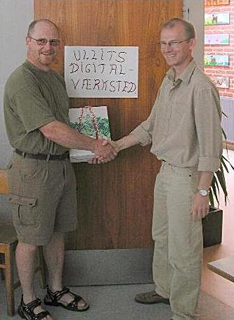

Ullits Digit@l-værksted

Vinder af navnekonkurrencen blev
Preben Bjerre
med forslaget
Ullits Digit@l-værksted
Her overrækker tovholder Bjarne Cæsar Nielsen den udlovede præmie, der bestod af 3 flasker rødvin.